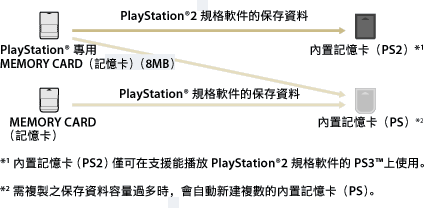
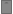

遊戲 > 遊玩PlayStation®2 / PlayStation®規格軟件 > 使用記憶卡的保存資料
使用記憶卡的保存資料
若要使用原已持有之PlayStation®專用MEMORY CARD（記憶卡）（8MB）／MEMORY CARD（記憶卡）內的保存資料遊玩時，需先將保存資料複製至硬碟中的內置記憶卡。複製時，需使用另售的記憶卡轉接器。
重要
- 部分PlayStation®2、PlayStation® 規格之軟件可能會於插入PS3™啟動時，出現與以往之PlayStation®2 或PlayStation® 主機不同的動作，或是無法正常啟動的現象。
- 此外，部份PS3™並不支援PlayStation®2規格軟件的播放。詳細請參閱［關於可播放的光碟種類］、各區域的官方網站或主機隨附的使用說明書。
1. |
選擇 |
|---|---|
2. |
將記憶卡轉接器插入PS3™，並插入記憶卡。 |
3. |
從顯示的記憶卡中，選擇想複製的記憶卡圖示後，按下 |
4. |
選擇［複製］。 |
5. |
指定插口。 |
 （遊戲）的
（遊戲）的 （記憶卡管理(PS/PS2)）。
（記憶卡管理(PS/PS2)）。 （記憶卡（PS））或
（記憶卡（PS））或 （記憶卡（PS2））的圖示。
（記憶卡（PS2））的圖示。 （新建內置記憶卡），並遵循畫面指示，建立內置記憶卡。
（新建內置記憶卡），並遵循畫面指示，建立內置記憶卡。提示
- 保存於PlayStation®2專用MEMORY CARD（記憶卡）（8MB）／MEMORY CARD（記憶卡）的保存資料會因種類的不同而分別複製至以下的內置記憶卡。
- 複製可能因保存資料的種類而需花費數10秒至數分鐘的時間。
- 若要集體複製保存於PlayStation®2專用MEMORY CARD（記憶卡）（8MB）／MEMORY CARD（記憶卡）內的保存資料，請於步驟3時選擇記憶卡後按下
 按鈕，開啟選項選單並選擇［複製］。
按鈕，開啟選項選單並選擇［複製］。 - 部分保存資料可能禁止複製。若要在PS3™上使用此類資料，請於步驟4時選擇［移動］。保存資料會被移動至硬碟，並自動從記憶卡刪除。
- 移動後的保存資料能再度返回記憶卡。

將保存資料複製至記憶卡
可將保存於硬碟的保存資料複製至PlayStation®2專用MEMORY CARD（記憶卡）（8MB）／MEMORY CARD（記憶卡）。若要複製，需使用另售的記憶卡轉接器。
1. |
選擇 |
|---|---|
2. |
將記憶卡轉接器插入PS3™，並插入記憶卡。 |
3. |
從保存了保存資料的  （內置記憶卡(PS2)）中，選擇想複製的保存資料圖示後，按下按鈕。
|
4. |
選擇［複製］。 |
 （內置記憶卡(PS)）或
（內置記憶卡(PS)）或提示
- 保存於內置記憶卡的保存資料無法集體複製至記憶卡。
- 部分保存資料可能禁止複製。若要在PS3™上使用此類資料，請於步驟4時選擇［移動］。保存資料會被移動至硬碟，並自動從記憶卡刪除。
- 移動後的保存資料亦能再度返回記憶卡。